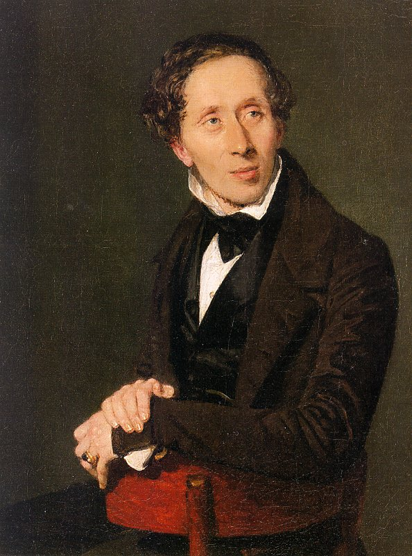

Soldățelul de plumb
Recenzii

„Soldățelul de plumb” este primul basm scris de Andersen care nu are nici un model literar și nici o sursă de basm popular. Acesta marchează o nouă independență în scrierea sa și este punctul culminant al evocării lumii de creșă din secolul al XIX-lea, cu dansatori de jucării, castele și lebede.
Joan G. Haahr scrie în The Oxford Companion to Fairy Tales: "Povestea este neobișnuită printre poveștile timpurii ale lui Andersen, atât prin accentul pus pe dorința senzuală, cât și în ambiguitățile sale. Soarta oarbă, nu intenția, determină toate evenimentele. Mai mult, întrebările narative Acceptarea pasivă a soldatului de tablă a oricărui lucru care i se întâmplă, în timp ce exemplifică idealuri pietiste de tăgăduire de sine, contribuie, de asemenea, la pierderea sa. Dacă ar vorbi și acționa, soldatul ar putea câștiga atât viața, cât și dragostea. cu toate acestea, prin inhibiție și convenție, el găsește doar tragedie și moarte. Povestea este adesea citită autobiografic, soldatul fiind văzut ca simbolizând sentimentele de inadecvare ale lui Andersen față de femei, acceptarea pasivă a atitudinilor burgheze de clasă sau sentimentul său de alienare ca artist. și un străin, de la participarea deplină la viața de zi cu zi. "
Joan G. Haahr scrie în The Oxford Companion to Fairy Tales: "Povestea este neobișnuită printre poveștile timpurii ale lui Andersen, atât prin accentul pus pe dorința senzuală, cât și în ambiguitățile sale. Soarta oarbă, nu intenția, determină toate evenimentele. Mai mult, întrebările narative Acceptarea pasivă a soldatului de tablă a oricărui lucru care i se întâmplă, în timp ce exemplifică idealuri pietiste de tăgăduire de sine, contribuie, de asemenea, la pierderea sa. Dacă ar vorbi și acționa, soldatul ar putea câștiga atât viața, cât și dragostea. cu toate acestea, prin inhibiție și convenție, el găsește doar tragedie și moarte. Povestea este adesea citită autobiografic, soldatul fiind văzut ca simbolizând sentimentele de inadecvare ale lui Andersen față de femei, acceptarea pasivă a atitudinilor burgheze de clasă sau sentimentul său de alienare ca artist. și un străin, de la participarea deplină la viața de zi cu zi. "